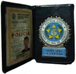

Tenho recebido muitos e-mails perguntando sobre o concurso para a Polícia Civil do Estado do Rio de Janeiro, que deverá ocorrer no corrente ano de 2008. Desta forma, pretendo informar aqui tudo que sei sobre o andamento do certame.
Observe-se que até a presente data o Edital ainda não foi divulgado pelo Governo do Estado, e por isso as informações são não-oficiais, mas já servem para matar a angústia e ansiedade de quem almeja tornar-se policial civil.
Devem abrir vagas para Inspetor de Polícia, Oficial de Cartório Policial, Papiloscopista Policial e Técnico de Necrópsia Policial.
Quanto ao salário e número de vagas, a previsão é a seguinte:
- Inspetor de Polícia de 6ª Classe: 500 vagas, ensino superior completo em qualquer área, salário bruto R$2.052,51 (líquido, no bolso, fica em torno de R$1.250,00 mais ou menos).
- Oficial de Cartório Policial de 6ª Classe: 300 vagas, ensino superior completo em qualquer área, salário bruto R$2.052,51.
- Papiloscopista Policial de 3ª Classe: 50 vagas, ensino superior completo em qualquer área, salário bruto R$2.326,14.
- Técnico de Necropsia Policial de 3ª Classe: 50 vagas, ensino médio completo, salário bruto R$1.361,28.
Não haverá concurso para Investigador Policial, que também é cargo de nível 2º grau, já que o último concurso para o cargo, realizado em 2005, ainda está em andamento, e sua conclusão deve demorar, pois, além de ações judiciais, o mesmo é ainda alvo de uma ação civil pública, promovida pelo Ministério Público/RJ.
Matérias das provas para cada cargo:
Para Inspetor de Polícia, Oficial de Cartório, e Papiloscopista:
- Português
- Informática
- Direito Penal
- Leis Penais Especiais
- Direito Processual Penal
- Direito Constitucional
- Direito Administrativo (inclusive Estatuto do Policial Civil – Decretos 218/75 e 3.044/80)
- Português
- Informática
- Anatomia e Fisiologia Humanas
Espero poder contar com novos bons colegas de trabalho, dispostos a agir diferente do que a maioria que entra costuma fazer. Entre para ajudar a fazer a diferença.
Acompanhe o andamento pelo site oficial da PCERJ, e boa sorte!
ATENÇÃO! Os comentário neste post foram encerrados. Para comentar ou fazer perguntas sobre o concurso, acesse este post: Perguntas e Respostas sobre o concurso da Polícia Civil do Rio. Obrigado!